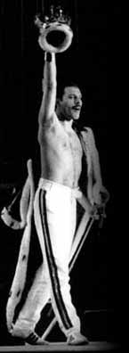

Queen live on tour: Queen II
This is just an approximate setlist. The shows were often different and in some cases (the US tour) shorter and didn't feature White Queen or Doin' All Right. Remember: not many recordings survived.
The Birmingham concert was originally scheduled for 17th March 1974 but then postponed to 2nd April because Queen were left without sufficient crew and also had to answer police inquiries after the famous riots in Stirling (where Queen failed to return to the stage after three encores). The American tour was meant to be much longer but Brian got hepatitis and approx. 20 gigs had to be cancelled.
Typical Setlist
- 01. Procession
- 02. Father To Son
- 03. Ogre Battle
- 04. White Queen
- 05. Doin' All Right
- 06. Son And Daughter
- 07. Keep Yourself Alive
- 08. Liar
- 09. Jailhouse Rock
- 10. Shake Rattle And Roll
- 11. Stupid Cupid
- 12. Be Bop A Lula
- 13. Jailhouse Rock (reprise)
- 14. Big Spender
- 15. Modern Times Rock'n'roll